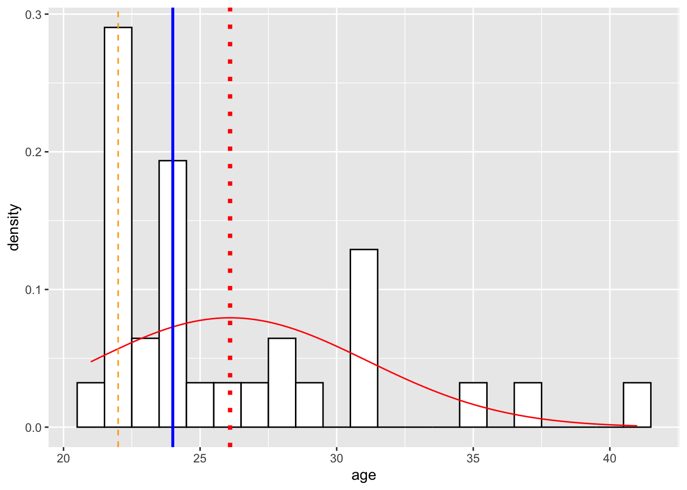
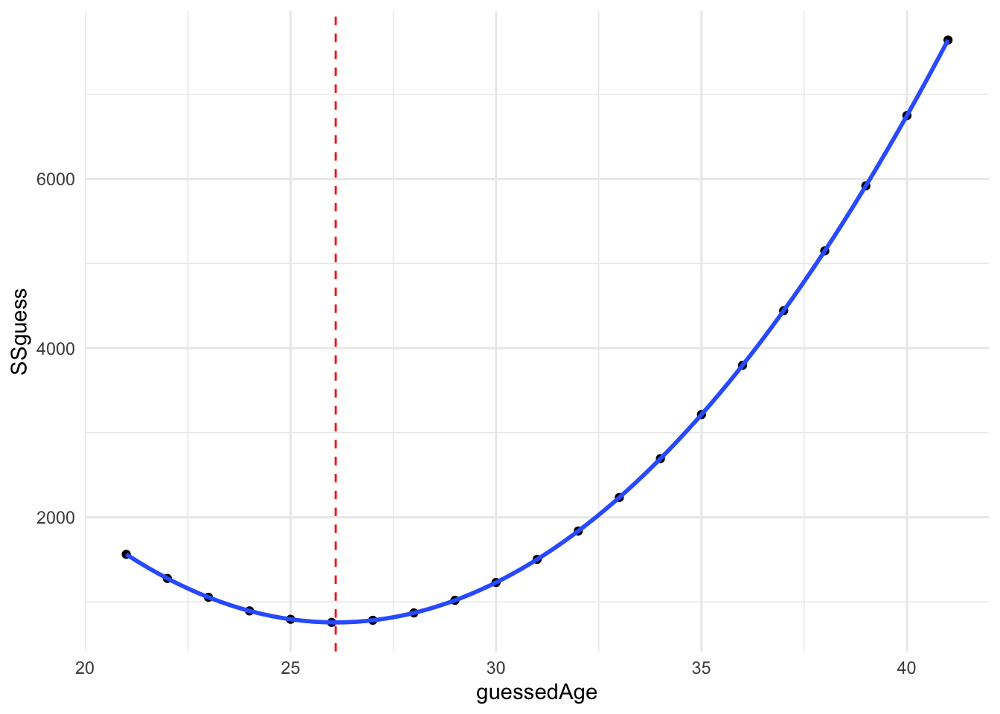
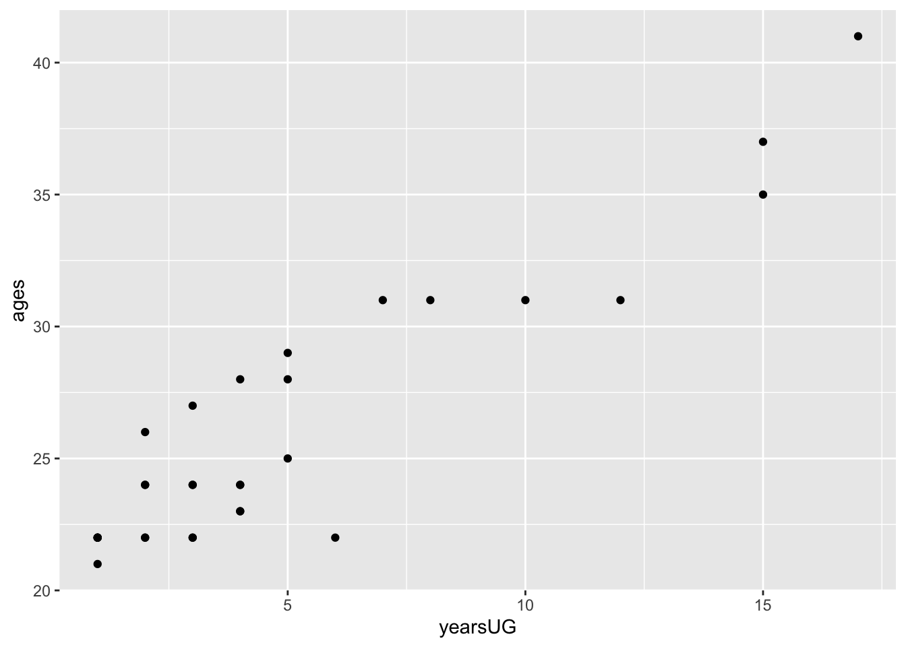
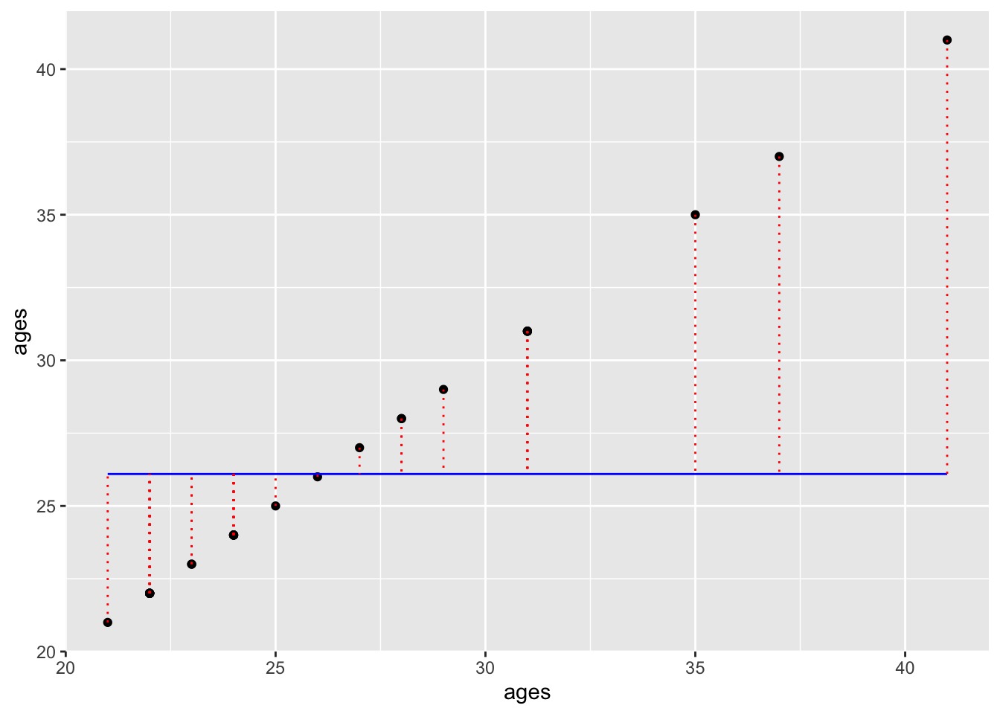
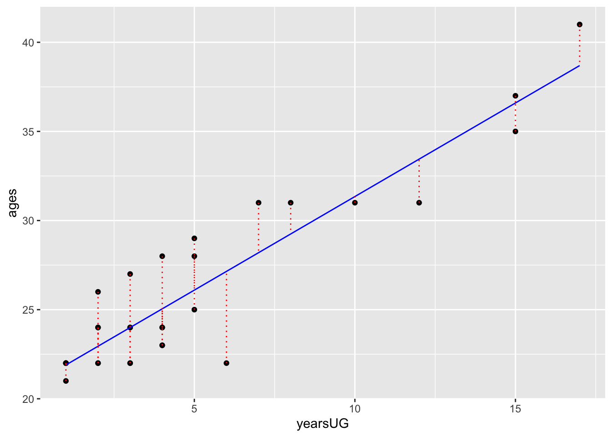
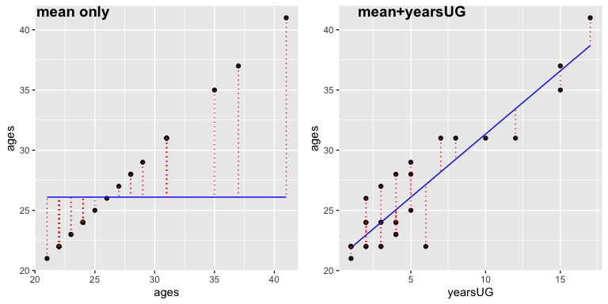

pacman::p_load(tidyverse, pander, DescTools, psych)14 Means and other models
First, let’s load in the packages we’ll be using for this walkthough:
A central emphasis this semester is that statistical methods are more than simply a toolbox to be thrown at data, but instead are a theoretical framework for developing models that help us to understand the world. The term model here is no more fancy or sophisticated than the types of models you may have played with as a child. As I write this, there is an overpriced Lego model of the Eiffel Tower sitting on my four-year-old’s dresser that took way too long to build. Just as children play with model airplanes, anatomy students study model eyeballs, architects build model skyscrapers, and physicists build complex simulations to model the cosmos. In each case, we gain an understanding of a more complex object or event by developing a simplified approximation of it… our model. Our models in stats are no different. We take something that is complex, our empirical data, and attempt to develop a more simple approximation of it that will not only help us to understand our data better, but also with the hope of extrapolating from it (i.e., moving from our sample to the population).
Keeping with this metaphor, we can think of our distributions as the actual Eiffel Tower—i.e, the real true values and scores that we have observed, while our measures of central tendency are like the scaled down Lego set resting on my daughter’s bookcase —a small, reduced approximation that captures some, but not all of the information from the original (I still don’t know how a four-year-old became obsessed with visiting Paris). To varying degrees, knowing your measures of central tendency, especially mean and standard deviation, will give you a great deal of information about your sample distribution; measures such as skew and kurtosis let you know how much you can (or better can’t trust this information). In essence you are taking a highly dimensional distribution, that can contain hundreds if not thousands of scores, and reducing its description down to 3 or 4 variables. In this way, getting your measures of descriptive statistics is a form of modeling.
One thing you may find, is that the mean() has an especially privileged status in many of the models that we will be using. Assumptions about the mean, or relationship between means serves as the basis for many statistical tools.
In this walkthrough we are going to take a look at why.
14.1 Basic form of statistical models and error
Statistical models take the basic form:
\[model = data + error\]
We’ll see the mathematical notation later, but for now this will do. The main thing to consider is that all models contain a certain amount of error. In fact, as we’ll discuss later on, a certain amount of error is good for us… models that perfectly fit the data (i.e., error = 0 in the equation above) don’t generalize well when we try to take the model derived from one set of data and apply it to other situations.
But error is something we seek to minimize (though not eliminate) in our statistical models. As it turns out, as a first pass, including the mean as a parameter, or predictor, in our model does a reasonable job. That’s why you may have heard me remark that if you know that your data is normally distributed, the mean is the best guess for any individual score (assuming that you are going to take a large number of guesses, choosing the mean is your best bet).
Here we will use R expand on this notion. We’ll also use this to get some more practice with variable assignment and working with vectors.
Let’s take a look at some age data (combined classes from previous years)…
names <- c("Tehran", "Carlos", "Jaquana", "Frenchy", "Taraneh","Corinne", "Cherish", "Sabrina", "Stephanie", "Taylor", "Sandra", "Emmanuel", "Jamie", "Heather", "Christine", "Dylanne", "Emily", "Tarcisio", "nabiha", "james", "chris", "margaret", "emily", "sarah", "nate", "tyra", "julia", "angela", "allie", "daniel", "sierra")
ages <- c(41, 31, 31, 21, 35, 31, 22, 22, 22, 24, 25, 31, 23, 22, 22, 23, 22, 37, 28,24,22,27,22,24,26,22,24,28,24,29,24)We can take these two vectors and turn them into a data frame, using tibble() from tidyr (tidyverse).
# A tibble: 31 × 2
person age
<chr> <dbl>
1 Tehran 41
2 Carlos 31
3 Jaquana 31
4 Frenchy 21
5 Taraneh 35
6 Corinne 31
7 Cherish 22
8 Sabrina 22
9 Stephanie 22
10 Taylor 24
# ℹ 21 more rowsEveryone’s age (numerical) is assigned to an object (their name). From here, we can use psych::describe() to get info about the class distribution of ages:
psych::describe(cohorts) vars n mean sd median trimmed mad min max range skew kurtosis se
person* 1 31 16.0 9.09 16 16.00 11.86 1 31 30 0.00 -1.32 1.63
age 2 31 26.1 5.02 24 25.24 2.97 21 41 20 1.26 0.84 0.9014.2 wait, isn’t the mode the highest probability?
psych::describe() give us our mean and median, but what about the mode? Didn’t we say the mode represents the greatest number of observations in the distribution? Whats the function for that?
As it turns out there is no pre-installed function for the mode. There is a mode() function, but ? mode tells us that it does something entirely different— it tells us what kind of data is in the assigned object. A quick Google search for function for mode in R reveals a number of options. We can either build our own function, or install one of several packages. Let’s do the latter, and install DescTools:
[1] 22
attr(,"freq")
[1] 9So now that we have these three values related to our distribution lets do some work!
First let’s plot our cohorts age data to a density histogram.
# creating a histogram:
# note I did this all in one step:
classAgesPlot <- ggplot2::ggplot(data = cohorts, aes(x=age)) +
geom_histogram(binwidth = 1,
color = "black",
fill = "white",
aes(y=..density..)) +
stat_function(fun = dnorm, # generate theoretical norm data
color = "red", # color the line red
args=list(mean = mean(cohorts$age), # build around mean
sd = sd(cohorts$age)))
classAgesPlotWarning: The dot-dot notation (`..density..`) was deprecated in ggplot2 3.4.0.
ℹ Please use `after_stat(density)` instead.
We can add vertical lines to the previous plot, indicating the mean, median, and mode values (using geom_vline():
classAgesPlot +
# mean is a red line
geom_vline(xintercept=mean(cohorts$age),
color="red",
linetype="dotted",
size = 1.5) +
# median is a blue line
geom_vline(xintercept=median(cohorts$age),
color="blue",
linetype="solid",
size = 1) +
# mode is an orange line
geom_vline(xintercept=DescTools::Mode(cohorts$age),
color="orange",
linetype="dashed",
size = .5)Warning: Using `size` aesthetic for lines was deprecated in ggplot2 3.4.0.
ℹ Please use `linewidth` instead.
So the mode has the highest probability. But that doesn’t mean that it is the best starting point to describe this data.
How far would you be off on a person by person basis if you selected the mode?:
class_ages_mode <- DescTools::Mode(cohorts$age)
cohorts$age - class_ages_mode [1] 19 9 9 -1 13 9 0 0 0 2 3 9 1 0 0 1 0 15 6 2 0 5 0 2 4
[26] 0 2 6 2 7 2The sum of this error:
sum(cohorts$age - class_ages_mode)[1] 127Okay, now assume you chose the mean:
class_ages_mean <- mean(cohorts$age)
cohorts$age - class_ages_mean [1] 14.90322581 4.90322581 4.90322581 -5.09677419 8.90322581 4.90322581
[7] -4.09677419 -4.09677419 -4.09677419 -2.09677419 -1.09677419 4.90322581
[13] -3.09677419 -4.09677419 -4.09677419 -3.09677419 -4.09677419 10.90322581
[19] 1.90322581 -2.09677419 -4.09677419 0.90322581 -4.09677419 -2.09677419
[25] -0.09677419 -4.09677419 -2.09677419 1.90322581 -2.09677419 2.90322581
[31] -2.09677419sum(cohorts$age - class_ages_mean)[1] -2.4869e-14The summed error of the mean is much less than then mode. In fact it’s going to be less than any other value—its going to be zero!
14.3 mean as fulcrum point
The next two sections involve a little bit of complex coding that will be rehearsed in future workshops. For now I have two goals, to:
- demonstrate the mean produces the least amount of summed error and
- by virtue of that minimized the sum-of-squared differences, or SS.
The latter is arguably more important as SS is used to calculate variability and is most directly used in assessing inferential models.
This week we also described the mean as the balance point for our data—that the sum of all deviation scores from the mean = 0: \(\sum{X-\bar{X}} = 0\). That is, the mean values produces the least amount of summed error, 0.
Imagine that you are encountering someone in class and are asked to guess their age (and WIN! WIN! WIN!). The only info that you have is the range of our ages:
range(cohorts$age)[1] 21 41In what follows, I’m going to iterate through each possible age (guess) within our range and get the sum of difference scores, or sumDiff. sumDiff is obtained by subtracting each age from a given value. Typically this value is the mean. For example say I guessed 27:
# 1. guessed age:
guess <- 27
# 2. resulting difference scores, squared
diffScores <- (ages-guess)
# 3. the sum of squares:
sumDiff <- sum(diffScores)
# 4. show the sumDiff (example)
show(sumDiff)[1] -28Now, I’m going to iterate through every possible age in the range, and save the resulting sumDiffs to a vector, sumDiffguess. It might be good for you to check to output on a line-by-line basis here.
# create a vector of all possible integers within our range:
rangeAges <- min(cohorts$age):max(cohorts$age)
# create an empty vector to save our resulting sum of differences
sumDiffguess <- vector()
guessedAge <- vector()
# here "i" indexes which value from the range to pull, for example when i=1, we are pulling the first number in the sequence
for(i in 1:length(rangeAges)){
guess <- rangeAges[i]
diffScores <- (ages-guess)
sumDiff <- sum(diffScores)
# save results to sumDiffguess
guessedAge[i] <- guess
sumDiffguess[i] <- sumDiff
}
diffAges_df <- tibble(guessedAge,sumDiffguess) #combine the two vectors to single data frame
diffAges_df# A tibble: 21 × 2
guessedAge sumDiffguess
<int> <dbl>
1 21 158
2 22 127
3 23 96
4 24 65
5 25 34
6 26 3
7 27 -28
8 28 -59
9 29 -90
10 30 -121
# ℹ 11 more rowsNow let’s plot the resulting sum of difference scores as a function of guessed age. The vertical line represents mean age. As you can see this is where our function crosses 0 on the y-axis (thick red line).
# note I did this all in one step:
sumDiffPlot <- ggplot2::ggplot(data = diffAges_df,
aes(x=guessedAge,
y=sumDiffguess)) +
geom_point() +
geom_line() +
geom_vline(xintercept=mean(cohorts$age), # using actual ages from
color="red",
linetype="dashed") +
geom_hline(yintercept=0, color = "red", size=2)+
theme_minimal()
sumDiffPlot
14.4 mean as minimizing random error
Of course, in our statistics the sum of squared-differences (or SS) \(\sum{(X-\bar{X})^2}\) is our primary measure rather than the sum of difference in the last example. SS is used to calculate variance \(\frac{\sum{(X-\bar{X})^2}}{N-1}\) and in turn standard deviation, which is just the square root of the variance. Both measures we use to describe variability in a distribution of data. When we know nothing about our data we assume that the scores, and therefore the resulting difference or error from the mean is randomly distributed. Hence the term random error.
First, let’s calculate the resulting SS for each possible guess (similar to above):
# create a vector of all possible integers within our range:
rangeAges <- min(cohorts$age):max(cohorts$age)
# create an empty vector to save our resulting sum of differences
SSguess <- vector()
guessedAge <- vector()
# here "i" indexes which value from the range to pull, for example when i=1, we are pulling the first number in the sequence
for(i in 1:length(rangeAges)){
guess <- rangeAges[i]
diffScores <- (ages-guess)
SSDiff <- sum(diffScores^2)
# save SS to SSguess
guessedAge[i] <- guess
SSguess[i] <- SSDiff
}
SS_Ages_df <- tibble(guessedAge,SSguess) #combine the two vectors to single data frame
show(SS_Ages_df)# A tibble: 21 × 2
guessedAge SSguess
<int> <dbl>
1 21 1562
2 22 1277
3 23 1054
4 24 893
5 25 794
6 26 757
7 27 782
8 28 869
9 29 1018
10 30 1229
# ℹ 11 more rowsNow, let’s see what happens when we plot the resulting SS as a function of guessed age:
SS_Plot <- ggplot2::ggplot(data = SS_Ages_df,
aes(x=guessedAge,
y=SSguess)) +
geom_point() +
geom_smooth() +
geom_vline(xintercept=mean(cohorts$age), # using actual ages from
color="red",
linetype="dashed") +
theme_minimal()
SS_Plot`geom_smooth()` using method = 'loess' and formula = 'y ~ x'
As you can see we get parabola with a minima at our mean.
14.5 but we can do better than that
The mean is good as a stab in the dark, but as you can see our SS is still high.
# minimum value of SSguess is the SS about the mean
min(SS_Ages_df$SSguess)[1] 757If we have other useful information about the nature of our age data, then maybe we can use that to make better predictions. These extra bits of info are our predictors. For example, let’s combine our age data with info on how many years everyone has been out of undergraduate. For the purposes of this example, I’m just going to make this data up (sort one, some of this may be true).
Let’s create a vector of years since UG:
yearsUG <- c(17,8,7,1,15,12,1,2,3,2,5,10,4,2,6,4,3,15,5,2,1,3,1,4,2,1,3,4,4,5,3)Lets combine yearsUG to our cohorts data frame:
and create a scatterplot (geom_point) of age as a function of yearsUG:
ggplot2::ggplot(cohorts, aes(x=yearsUG,y=ages)) + geom_point()
Keeping in mind that our focus this semester will be in linear models. As a simplification, this means that we are looking for an equation of the line that best fits our data (minimizes the resulting SS). The equation for the line that represents the mean would be:
\[\hat{Y} = mean\ age + 0 * yearsUG\]
This means years since undergrad does not figure into the mean model (it gets multiplied by zero. This results in a horizontal line with mean age as the y-intercept. We would define this model as “predicting age (\(\hat{Y}\)) as a function of the mean age of the distribution.
This is still a couple weeks out, but in R we would run this model, aka the means_model, as:
means_model <- lm(formula = ages~1,data = cohorts)and we can add the regression line (means_fitted) for this model to our the previous plot. Note that the dotted vertical lines (in red) represent the residuals—the differences between what the model predicts and actual data:
# add the predicteds and residuals from the means model to our cohorts dataframe:
cohorts <- cohorts %>% mutate(means_fitted = means_model$fitted.values,
means_resids = means_model$residuals)
ggplot2::ggplot(cohorts, aes(x=ages,y=ages)) +
geom_point() + # add actual data points
geom_line(aes(y = means_fitted), color = "blue") + # Add the predicted values
geom_segment(aes(xend = ages, yend = means_fitted), color="red", linetype="dotted")
The squared sum of the length of those dotted lines is your…. wait for it Sum of Squares!!!.
Now lets compare this to a model predicting age as a function of years since undergrad yearsUG. In this case our model would be:
years_model <- lm(formula = ages~yearsUG, data = cohorts)And we can add the regression line and residuals like above:
# add the predicteds and residuals from the years model to our df:
cohorts <- cohorts %>% mutate(years_fitted = years_model$fitted.values,
years_resids = years_model$residuals)
ggplot2::ggplot(cohorts, aes(x=yearsUG,y=ages)) +
geom_point() + # add actual data points
geom_line(aes(y = years_fitted), color = "blue") + # Add the predicted values
geom_segment(aes(xend = yearsUG, yend = years_fitted), color="red", linetype="dotted")
Those residuals have shrunk quite a bit. Indeed comparing the two:
tibble("means_model_SS"=cohorts$means_resids^2 %>% sum(), #sum of squares
"years_model_SS"=cohorts$years_resids^2 %>% sum() #sum of squares
) %>% pander()| means_model_SS | years_model_SS |
|---|---|
| 756.7 | 115.3 |
and visually:
means_model_plot <- ggplot2::ggplot(cohorts, aes(x=ages,y=ages)) +
geom_point() + # add actual data points
geom_line(aes(y = means_fitted), color = "blue") + # Add the predicted values
geom_segment(aes(xend = ages, yend = means_fitted), color="red", linetype="dotted")
years_model_plot <- ggplot2::ggplot(cohorts, aes(x=yearsUG,y=ages)) +
geom_point() + # add actual data points
geom_line(aes(y = years_fitted), color = "blue") + # Add the predicted values
geom_segment(aes(xend = yearsUG, yend = years_fitted), color="red", linetype="dotted")
cowplot::plot_grid(means_model_plot,years_model_plot, labels = c("mean only", "mean+yearsUG"))
As you may have intuited the lm in the above call stands for “linear model”. Congrats, you just plotted a linear regression!!!!
What’s important here is that from a visual inspection the yearsUG model provides a better fit. Why, because it’s reduced the resulting difference scores (of SS). The sum of the squared distances from each point to the regression line with yearsUG as a predictor is less than the regression model with the mean as the only predictor. This is what we mean by “accounting for variance”. The yearsUG model accounts for more variance than the means model—why because it reduces the SS.
This sort of comparison (between a means_model and a means+predictors model is the backbone of many of the tests you will perform this semester. Indeed in a few weeks when we say that the “regression is significant” or that the “F-ratio for the ANOVA is significant” this is essentially the comparison that we are making!!!
Of course, a critical question that we strive to answer with our statistical tests (like the F-test) is whether the model using additional predictors accounts for more variance above a critical threshold that it may be deemed significant, or unlikely due to chance. This is something that will become critically important in a few weeks. For now, if you can wrap your head around this walkthrough, then you’ve got an intuitive understanding of almost every test we will run this semester.